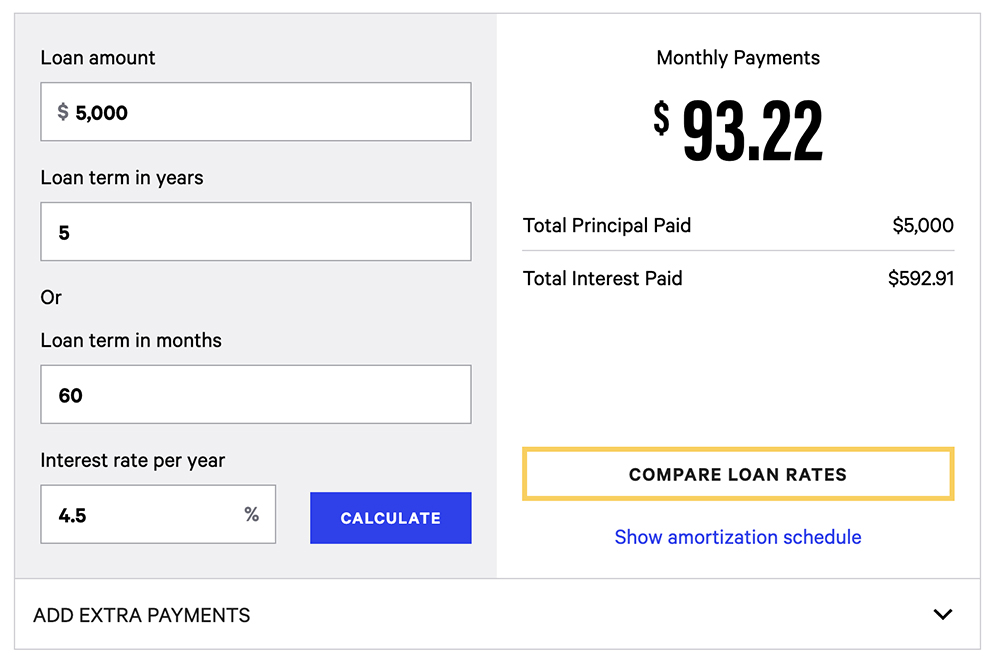

Creating A Budget Plan
Determine Your Income |
Your income is typically defined as the money you receive, especially on a regular basis. Sources of income during college varies from student to student. It could be from a part-time job to an allowance to a small business or all of the above. No matter what your income is, the first step to managing your money is being aware of how much you earn.
| Savings & Spending
After calculating how much you earn, determine the timeframe of your budget. You can have a weekly budget, bi-weekly budget or a monthly budget. Choosing which budget is right for you usually depends on when you get paid and how much self-control you have. Other factors can also affect what is ideal for you such as when you buy groceries, when you pay for subscriptions, when you pay your phone bill and etc. If you don’t know where to start, a monthly budget is the most common.
The first things to allocate in your budget are essential expenses. Don’t convince yourself that a weekly shopping spree or dinner with friends are essential expenses. This category is for housing, utilities, phone bills, grocery spending, and transportation.
Once you subtract all your essential costs, what’s left of your income is divided for savings and desires. How this is divided all depends on your dedication. The obvious recommendation is to save all of your leftover money, however humans aren’t perfect, especially college students with newfound independence. Here are some methods you can choose from:
Save The First, Spend The Rest
This method involves taking the first digit of your leftover income and putting the whole number into your savings, leaving what’s leftover to spend on whatever you want. For example if you have $657 left over, you put $600 into your savings and $57 can be spent on clothes, products, or nights out.
50/50
This method is more self-explanatory in that you save half of what’s leftover and spend the other half.
20/80
This method is like the 50/50 method rule except it’s more meant for those who want to use their wealth for present experience and indulgence thus 80% of what’s left over can be spent on what you want while 20% is in savings.
[CLOSE METHODS]
There are pros and cons to each method, and these aren’t the only ones that exist. You can decide your own percentage cuts best fit to your comfort zone. However, these decisions need to be thought over past instant gratification. Everyone would love to blow their paycheck on Amazon impulses, but when it comes to the larger purchases later in your life like a new car or your first home, saving early will make the process easier. To make putting away your money feel less disappointing, it helps to remind yourself of these future purchases. If one of your life goals include building the house of your dreams, the money that you save can feel satisfying in that you’re closer to achieving that. On the same vine, although college students are decades away from retirement, it’s never too early to think about it as rarely anyone wants to work until their time comes. So, saving your money can also be thought of as funding for an older version of you.
Debt
Unless you received a full scholarship to your college, odds are you had to take out student
loans. One of your biggest priorities when it comes to finance should be to get rid of your debt
as soon as possible. Luckily, you have some time to pay off these loans, but the longer you
wait, the more you have to pay due to interest rates.
Interest Rate – “the percentage of a loan that is charged as interest to the borrower in
addition to your principal amount.”
To determine how much of your debt repayments to allocate into your budget plan, a loan
calculator is a great resource.

Bank Rate Loan
Calculator